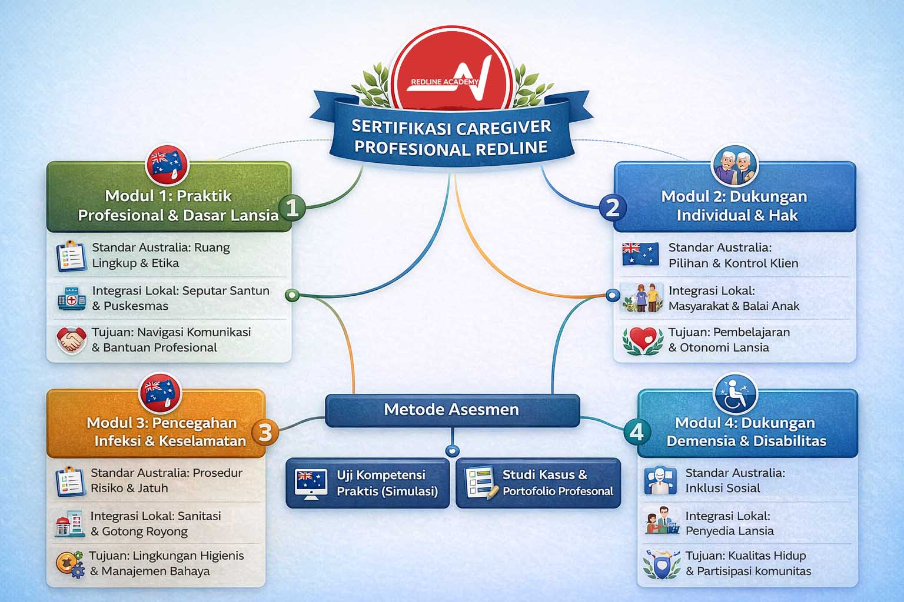

Kursus Caregiver Bersertifikat: Apa Bedanya Credential AUS NMF dengan Sertifikat Biasa?
Sertifikat biasa mudah diabaikan. Credential yang bisa diverifikasi membuka pintu.
Primary keyword: Kursus Caregiver Bersertifikat | Search intent: Riset kredensial | Cluster stage: Tahap pertimbangan

Tahap kedua dalam cluster artikel caregiver
Halaman ini menjawab pertanyaan yang biasanya muncul setelah orang tertarik pada programnya: credential apa yang sebenarnya bernilai di mata employer global?
Mengapa Sertifikat Caregiver Tidak Semuanya Sama?
Banyak orang bertanya kepada kami: bukankah semua sertifikat caregiver pada dasarnya sama? Bukankah yang penting adalah kemampuan kerja, bukan sertifikatnya? Jawaban kami: kemampuan kerja adalah segalanya, dan itulah justru mengapa credential yang mendokumentasikan kemampuan itu secara transparan, terukur, dan dapat diverifikasi adalah hal yang paling penting yang bisa kamu miliki.
Di Indonesia, standar sertifikasi caregiver yang paling umum adalah BNSP. BNSP adalah sistem nasional yang penting dan dihormati secara domestik. Tetapi ketika seorang caregiver Indonesia melamar pekerjaan di fasilitas perawatan di Osaka, di Melbourne, atau di Amsterdam, manajer SDM di sana hampir selalu tidak familiar dengan apa yang dimaksud oleh sertifikat BNSP. Bukan karena pelatihan yang diterimanya kurang bagus, tetapi karena arsitektur dokumentasinya tidak dikenal di luar Indonesia.
Inilah yang kami sebut recognition gap, kesenjangan pengakuan. Ini adalah hambatan struktural yang mencegah caregiver Indonesia mendapatkan pekerjaan dan penghasilan yang sepadan dengan kemampuan mereka.

Apa itu Australian NMF Micro Credential dan Mengapa Ini Berbeda?
Bukan hanya daftar topik yang diajarkan, tetapi kompetensi spesifik apa yang berhasil didemonstrasikan peserta dan bagaimana penilaiannya dilakukan.
Jumlah jam minimum yang cukup dan jenis pembelajaran yang harus dicapai terdokumentasi dengan jelas.
Setiap credential dikeluarkan di bawah pengawasan sistem jaminan mutu yang diakui.
Metode penilaian dijelaskan secara terbuka sehingga pemberi kerja dapat memahami apa arti credential tersebut.
Credential dapat ditumpuk untuk membangun jalur karier yang progresif.
Ini adalah arsitektur yang dipahami oleh manajer SDM di Tokyo, Sydney, Frankfurt, dan Taipei.
Ketika mereka melihat NMF-aligned micro credential dari Redline Academy, mereka tahu persis apa yang mereka lihat: dokumentasi yang terstandar, transparan, dan dapat diverifikasi secara digital.
Recognition gap bukan masalah kemampuan. Ini masalah bagaimana kemampuan itu didokumentasikan dan dibaca oleh dunia.
Credential yang tepat mengubah kemampuan yang sudah Anda miliki menjadi bukti yang bisa diverifikasi, dipahami, dan dipercaya.

Apa yang Kamu Dapatkan Setelah Menyelesaikan Kursus Caregiver Bersertifikat Redline Academy?
- NMF-aligned digital micro credential - dapat diverifikasi oleh pemberi kerja internasional secara online.
- Dual-recognition pathway menuju BNSP - untuk memastikan pengakuan domestik juga terpenuhi.
- Documented learning outcomes - dokumentasi spesifik kompetensi yang kamu miliki, bukan hanya konfirmasi kehadiran.
- Stackable credential - setiap tier yang kamu selesaikan menambah nilai dan membuka jalur lanjutan.
- Career pathway support - panduan konkret tentang langkah selanjutnya, dari SSW visa Jepang hingga peluang domestik.
Jika Anda sudah paham perbedaan credentialnya, langkah berikutnya adalah memastikan institusi yang Anda pilih memang kredibel. Untuk itu, lanjutkan ke Lembaga Pelatihan Caregiver.
The second stage of the caregiver content cluster
This page answers the question that usually appears after someone becomes interested in the program itself: what kind of credential actually holds value in the eyes of global employers?
Why Aren't All Caregiver Certificates Equal?
Many people ask us whether all caregiver certificates are basically the same. Our answer is no. Work capability matters most, and that is exactly why a credential that documents that capability in a transparent, measurable, and verifiable way matters so much.
In Indonesia, the most common caregiver certification standard is BNSP. BNSP is important domestically. But when an Indonesian caregiver applies for work in Osaka, Melbourne, or Amsterdam, hiring managers there are usually unfamiliar with what a BNSP certificate means. Not because the training is weak, but because the documentation architecture is not internationally familiar.
This is what we call the recognition gap. It is a structural barrier that prevents Indonesian caregivers from accessing jobs and income that match their real capability.
What Is an Australian NMF Micro Credential and Why Is It Different?
Not just a list of topics, but specific competencies demonstrated by the learner and how they were assessed.
The minimum hours and learning format required are transparently recorded.
Each credential is issued under a recognised quality assurance system.
Assessment methods are openly described so employers understand what the credential represents.
The credential can be built on over time to create a progressive career pathway.
This is the architecture hiring managers in Tokyo, Sydney, Frankfurt, and Taipei already understand.
The recognition gap is not a capability problem. It is a documentation and legibility problem.
The right credential transforms your existing capability into proof that can be verified, understood, and trusted.
What Do You Receive After Completing Redline Academy's Certified Caregiver Course?
- NMF-aligned digital micro credential - verifiable online by international employers.
- Dual-recognition pathway toward BNSP - helping ensure domestic recognition is also covered.
- Documented learning outcomes - specific evidence of your competencies, not only proof of attendance.
- Stackable credential - each tier you complete increases value and opens the next pathway.
- Career pathway support - concrete guidance for what comes next, from Japan's SSW visa route to domestic opportunities.
Siap Mulai Karier Caregiver?
Hubungi tim Redline Academy untuk konsultasi program dan jalur belajar yang sesuai kebutuhan Anda.
Konsultasi Sekarang